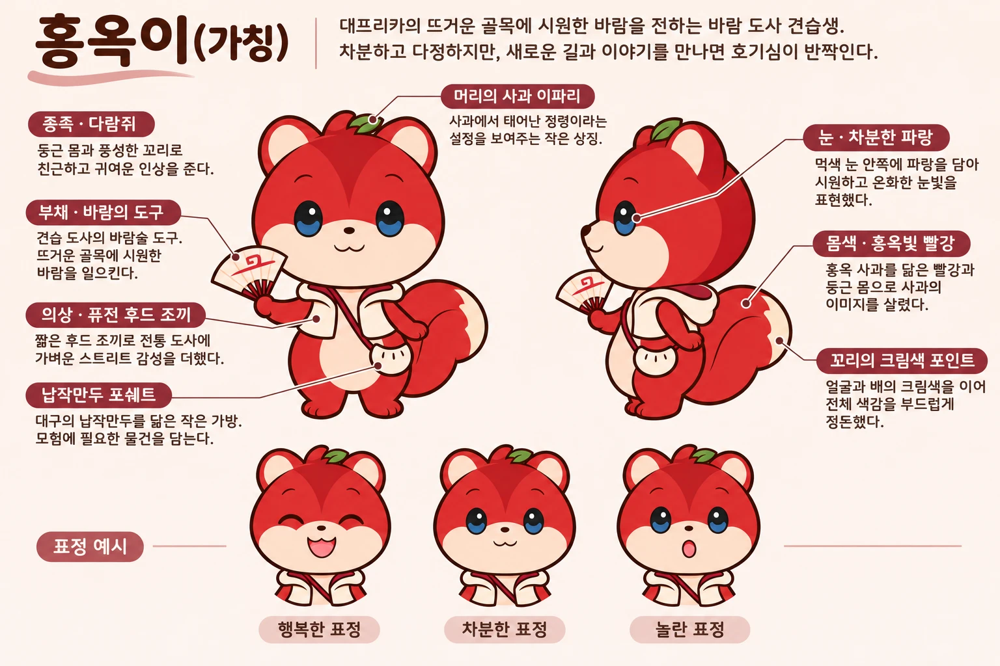

날씨가 길을 정하는 도시 탐험 RPG
TREAGENT · AX 크리에이티브 트랙 (콘텐츠 & 뷰티) · 2026-11-10 기준 초안
여름 대구 하면 먼저 떠오르는 '대프리카'. 2026년 7월 현장 취재에서 수성구 범어네거리는 체감 40℃로 측정됐습니다. 영남일보 · 단일 출처
날씨가 나갈 이유를 막습니다. 여름과 겨울에는 도시에 나갈 동기가 줄어듭니다. 가을 축제에 방문이 몰리는 구조와도 맞닿아 있습니다. 2026 보도 · 기획안 0-1
근거: plan/daeprica_hidden_quest_plan.md 0-1
날씨를 장애물이 아니라 퀘스트 조건으로 바꿉니다. 더운 날엔 실내 던전이 열리고, 선선한 날엔 야외 퀘스트가 열립니다.
쿨링포그, 그늘, 실내 카페와 박물관이 곧 '안전지대'이자 아이템 창고가 됩니다. 여름 시즌 부제는 "대프리카 서바이벌".
근거: plan/daeprica_hidden_quest_plan.md 1장 · 세계관 표현은 창작 초안
날씨 확인
기온·체감·강수
오늘의 퀘스트 열림
날씨에 맞는 목록
장소 이동·미션
실내·그늘 우선
보상·도감 기록
스탬프, 아이템
창작 설계 초안. 팀 결정 전.
기온과 체감에 따라 야외 퀘스트는 잠기고 실내·그늘 퀘스트가 열립니다.
쿨링 쉼터에 들르면 체력이 회복됩니다. 폭염 중 쉼터 이용 기록이 남습니다 (안전 지표).
장소마다 스탬프를 모읍니다. 모은 스탬프는 도감이 되고, 시즌 배지로 바뀝니다.
2~4명이 단서를 나눠 찾습니다. 한 명이 쉬는 동안 다른 명이 탐색하는 식입니다.
단서를 모으고 힌트를 줍니다. 퀘스트 완료 때 표정이 바뀌어 상태를 알려 줍니다.
부채, 돋보기, 쿨링 패치 같은 아이템을 씁니다. 무료로 얻는 아이템이 기본입니다.
기능 이름과 역할은 창작 초안. 아이템 예시 근거: brand/game_items_v1.md (돋보기, 손선풍기, 쉼터 스탬프 등)
체감 38℃. 야외 퀘스트 잠김, 실내 3개 열림
쿨링 쉼터 체크인. 체력 회복, 첫 단서 획득
박물관 미션 수행. 도감 스탬프 1개
저녁 바람 불 때 야외 퀘스트 1개 추가 개방
예시 시나리오(창작). 실제 장소와 시간은 장소 운영 정보 확인 후 확정.
기온, 체감온도, 강수, 계절
실내 / 그늘 / 야외, 운영 여부, 혼잡도
체력, 팀 인원, 최근 쉼터 방문
| 규칙 | 조건 | 결과 |
|---|---|---|
| R1 폭염 잠금 | 체감 임계치 이상 (값은 결정 필요) | 야외 퀘스트 잠금, 실내·그늘 퀘스트 개방 |
| R2 운영 확인 | 휴관·영업 종료 장소 | 퀘스트 자동 제외, 대체 장소 제시 |
| R3 혼잡 분산 | 대기가 긴 장소 (시간대 혼잡) | 시간대를 나눠 배치, 이른 시간·늦은 시간 추천 |
| R4 계절 전환 | 계절이 바뀔 때 | 퀘스트 세트 교체 (여름 → 가을 등) |
근거: painpoint/voc_classified.csv (대기·혼잡 13건, 운영 변경 10건, 날씨 4건). 임계치와 기상 데이터 연동 가능성은 [확인 필요].
더워도 할 일이 있습니다. 불편(대기·운영 불일치)을 퀘스트 순서로 피합니다.
쉼터 이용 기록(안전), 비수기 방문 분산을 함께 봅니다.
비수기 방문 건수 · 쉼터 체크인 수 · 퀘스트 완료율 · 2주 내 재방문율 · 시즌 해시태그 수
근거: plan/daeprica_hidden_quest_plan.md 0-4
근거: 과금 구조는 팀 제안 초안. 규제 확인은 [확인 필요].

머리 사과 이파리 · 부채(바람) · 납작만두 모양 가방 · 홍옥빛 몸 · 크림색 꼬리
근거: brand/character/hongok_squirrel.md, 캐릭터 시트 (이름 '홍옥이'는 가칭)
단서와 힌트를 전하는 말 상자 주인공. 캐릭터의 호기심이 '새 길'을 열어 줍니다.
표정 3종으로 상태를 알립니다. 행복 = 완료, 차분 = 쉼터 안내, 놀람 = 새 퀘스트.
"물 한 모금 하고 가요" 같은 쉼터·안전 문구의 얼굴. 지자체 캠페인과 연결하기 좋습니다 추정
사과 이파리 모티브를 스탬프 아이콘으로 씁니다. 시즌마다 배지 색을 바꿉니다.
인증 사진에 붙이는 스티커와 이모지 세트. 챌린지 해시태그와 함께 씁니다.
의상·부채 같은 치장 아이템과 굿즈를 같은 디자인으로 묶습니다 (과금 A안과 연결).
활용안은 창작 제안. 이름과 말버릇 확정은 팀 결정.
숙박 연계 · 대학 캠퍼스 연계는 지금 하지 않습니다. 이용자가 늘면 제휴를 검토합니다.
근거: 2026-11-10 팀 결정 (여름 우선, 가을 성과 판단)